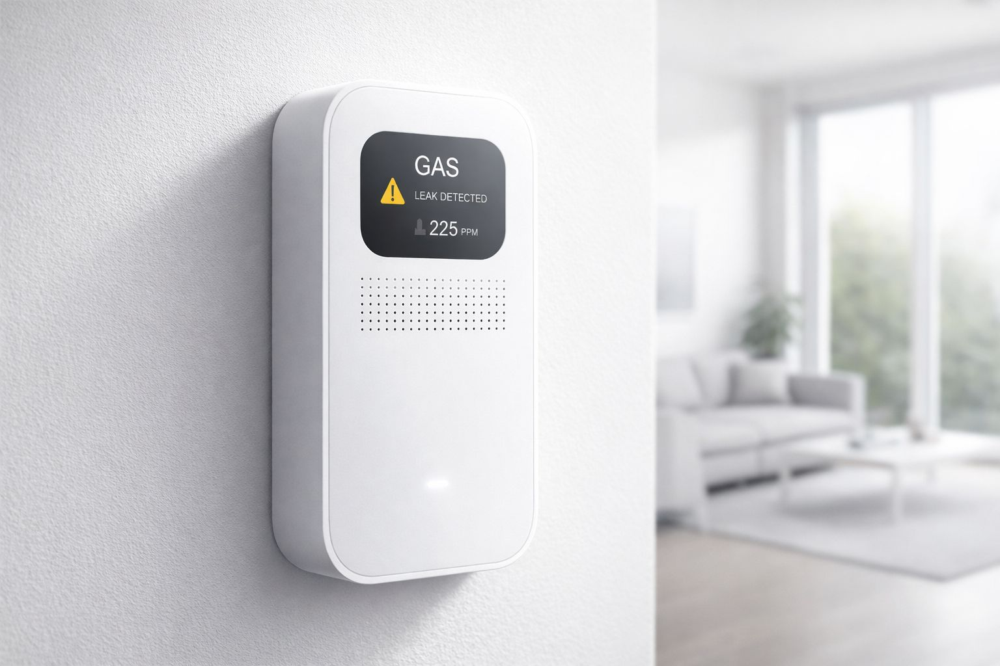

Sistema inteligente de prevención
SentinelGas monitorea el ambiente, detecta riesgos, envía alertas y ayuda a actuar rápido para evitar accidentes.
Es un sistema completo que combina sensores, procesamiento y una app móvil para detectar riesgos y prevenir accidentes en tiempo real.
Detectan gas y monóxido en el ambiente.
Arduino analiza los datos y detecta peligro.
Muestra el estado y alerta al usuario.
Indica qué hacer en cada situación.
El sistema transforma datos del entorno en decisiones rápidas para el usuario.
Los sensores miden constantemente el aire.
Arduino evalúa si hay peligro.
Se activa alarma y notificación.
El usuario recibe instrucciones claras.
La app permite visualizar el estado del sistema en tiempo real y recibir alertas inmediatas.

Estado general del sistema y monitoreo.
Imagen ilustrativa
Notificación de peligro y acción recomendada.
Imagen ilustrativa
SentinelGas es una solución completa que integra sensores físicos, control inteligente y una aplicación móvil para prevenir accidentes.
✔ Detección automática
✔ Alertas en tiempo real
✔ Aplicación móvil
✔ Asistencia al usuario